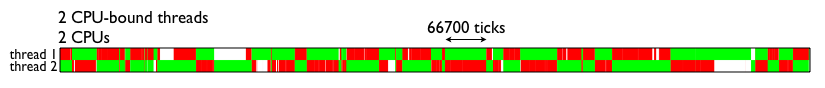

Python GIL
An example
In the following Python program, it seems that the program may reach 100% CPU usuage. In fact, it takes only 50% of CPU resources.
import threading
# 子线程死循环
def test():
while True:
pass
t1 = threading.Thread(target=test)
t1.start()
# 主线程死循环
while True:
pass
Introduction
Python全局解释器锁(Global Interpreter Lock)是用于同步线程的一种机制，它使得任何时刻仅有一个线程在执行。上面例子中虽然两个线程是死循环，而且有两个物理CPU内核，但因为 GIL的限制，两个线程只是做着分时切换，总的CPU占用率还略低于50％。
Note: One thread runs Python, while N others sleep or await I/O
Visualization:
All of those red regions indicate times where the operating system has scheduled a Python thread on one of the cores, but it can't run because the thread on the other core is holding it.


Cooperative Multitasking
When it begins a task, such as network I/O, that is of long or uncertain duration and does not require running any Python code, a thread relinquishes the GIL so another thread can take it and run Python. This polite conduct is called cooperative multitasking(协同式多任务处理), and it allows concurrency; many threads can wait for different events at the same time.
For cooperative multitasking, processes voluntarily yield control periodically or when idle in order to enable multiple applications to be run simultaneously. All programs must cooperate for the entire scheduling scheme to work.
Say that two threads each connect a socket:
def do_connect():
s = socket.socket()
s.connect(('python.org', 80)) # drop the GIL
for i in range(2):
t = threading.Thread(target=do_connect)
t.start()
Only one of these two threads can execute Python at a time, but once the thread has begun connecting, it drops the GIL so the other thread can run. This means that both threads could be waiting for their sockets to connect concurrently, which is a good thing. They can do more work in the same amount of time.
Let's try to open the box and see how a Python thread actually drops the GIL while it waits for a connection to be established, in socketmodule.c:
/* s.connect((host, port)) method */
static PyObject *
sock_connect(PySocketSockObject *s, PyObject *addro)
{
sock_addr_t addrbuf;
int addrlen;
int res;
/* convert (host, port) tuple to C address */
getsockaddrarg(s, addro, SAS2SA(&addrbuf), &addrlen);
Py_BEGIN_ALLOW_THREADS
res = connect(s->sock_fd, addr, addrlen);
Py_END_ALLOW_THREADS
/* error handling and so on .... */
}
The Py_BEGIN_ALLOW_THREADS macro is where the thread drops the GIL; it is defined simply as:
PyThread_release_lock(interpreter_lock);
And of course Py_END_ALLOW_THREADS reacquires the lock. A thread might block at this spot, waiting for another thread to release the lock; once that happens, the waiting thread grabs the GIL back and resumes executing your Python code. In short: While N threads are blocked on network I/O or waiting to reacquire the GIL, one thread can run Python.
Let's contrast cooperative multitasking with the other kind of multitasking.
Preemptive Multitasking
A Python thread can voluntarily release the GIL, but it can also have the GIL seized from it preemptively(Preemptive multitasking, 抢占式多任务处理).
Let's back up and talk about how Python is executed. Your program is run in two stages. First, your Python program is compiled into a simpler binary format called bytecode. Second, the Python interpreter's main loop, a function mellifluously named PyEval_EvalFrameEx(), reads the bytecode and executes the instructions in it one by one.
While the interpreter steps through yourbytecode it periodically drops the GIL, without asking permission of the thread whose code it is executing, so other threads can run:
for (;;) {
if (--ticker < 0) {
ticker = check_interval;
/* Give another thread a chance */
PyThread_release_lock(interpreter_lock);
/* Other threads may run now */
PyThread_acquire_lock(interpreter_lock, 1);
}
bytecode = *next_instr++;
switch (bytecode) {
/* execute the next instruction ... */
}
}
By default the check interval is 1000 bytecodes. All threads run this same code and have the lock taken from them periodically in the same way. In Python 3 the GIL's implementation is more complex, and the check interval is not a fixed number of bytecodes, but 15 milliseconds. For your code, however, these differences are not significant.
解决办法
用multiprocessing替代Thread
利用multiprocessing模块，可以很方便的处理。但进程会增加程序实现时线程间数据通讯和同步的困难。
利用ctypes绕过GIL
ctypes可以让Python 接调用任意的C动态库的导出函数。
from ctypes import *
from threading import Thread
#加载动态库
lib = cdll.LoadLibrary("./libdeadloop.so")
#创建一个子线程，让其执行ｃ语言编写的函数，此函数是一个死循环
t = Thread(target=lib.DeadLoop)
t.start()
#主线程，也调用ｃ语言编写的那个死循环函数
#lib.DeadLoop()
while True:
pass
Reference
Python and MySQL
There are a lot of python driver available for MySQL and two stand out the most. The one, traditionally everybody’s choice, sort of industrial standard MySQLdb. It uses a C module to link to MySQL’s client library. For Python3, use PyMySQL instead, because MySQLdb don't support Python3. Oracle’s mysql-connector on the other hand is pure python so no MySQL libraries and no compilation is necessary.
MySQL Connector/Python
To use Python with MySQL, you can use the MySQL Connector/Python (Download Here). For those with anaconda, just install with conda:
conda install -c anaconda mysql-connector-python
MySQL Connector/Python includes support for:
- Almost all features provided by MySQL Server.
- Converting parameter values back and forth between Python and MySQL data types.
- All MySQL extensions to standard SQL syntax.
import re
import mysql.connector
# establishes the connection to MySQL.
cnx = mysql.connector.connect(user='root', password='8032804254qq',
host='127.0.0.1', database='rookery', port='3306')
# creates a cursor object (cur) to use for executing queries on the database.
cur = cnx.cursor(buffered=True)
# query mysql database for list of user accounts
sql_stmnt = "SELECT DISTINCT User, Host FROM mysql.db "
sql_stmnt += "WHERE Db IN('rookery','birdwatchers') "
sql_stmnt += "ORDER BY User, Host"
cur.execute(sql_stmnt)
# loop through list of user accounts
for user_accounts in cur.fetchall():
user_name = user_accounts[0]
host_address = user_accounts[1]
user_account = user_name.decode('utf-8') + "@" + host_address.decode('utf-8')
# display user account heading
print('User Account:', (user_name, host_address))
print("------------------------------------------")
# query mysql for grants for user account
sql_stmnt = "show grants for " + user_account
cur.execute(sql_stmnt)
# loop through grant entries for user account
for grants in cur.fetchall():
# skip 'usage' entry
if re.search('USAGE', grants[0]):
continue
# extract name of database and table
dbtb = re.search('ON\s(.*)\.+?(.+?)\sTO', grants[0])
db = dbtb.group(1)
tb = dbtb.group(2)
# change wildcard for tables to 'all'
if re.search('\*', tb): tb = "all"
# display database and table name for privileges
print("database: ", db, "table: ", tb)
# extract and display privileges for user account # for database and table
privs = re.search('GRANT\s(.+?)\sON', grants[0])
print('privileges: ', privs.group(1))
cur.close()
cnx.close()
PyMySQL
PyMySQL is to be a drop-in replacement for MySQLdb and work on CPython, PyPy and IronPython.
Installation
$ pip install PyMySQL
Example
import pymysql
# connect to the datacase
connection = pymysql.connect(host='localhost', user='root', password='8032804254qq', db='test')
with connection.cursor() as cursor:
"""
Create Table | CREATE TABLE `books` (
`book_id` int(3) NOT NULL AUTO_INCREMENT,
`title` text DEFAULT NULL,
`status` bit(1) DEFAULT b'0',
PRIMARY KEY (`book_id`)
) ENGINE=MyISAM AUTO_INCREMENT=103 DEFAULT CHARSET=utf8
"""
# create a new record
sql = "INSERT INTO `books` (`title`, `status`) VALUES (%s, %s)"
cursor.execute(sql, ('GRE Reading', 1))
# connection is not autocommit by default. So you must commit to save your changes.
connection.commit()
with connection.cursor() as cursor:
sql = "select `book_id`, `title`, `status` from `books`"
cursor.execute(sql)
# read records
for book in cursor.fetchall():
book = list(book)
book[2] = ord(book[2])
print(book)
Difference? which is better?
MySQLdb is a thin python wrapper around C module which implements API for MySQL database.
MySQL Connectoris a Python module that reimplements the MySQL Database API in Python. It is written in Python and does not have any dependencies except for the Python Standard Library. It is slower, but does not require the C library and so is more portable.
Query Performance
Obviously, MySQLdb has better performance, especially when it comes to large data sets.

Reference
1.The differences between MySQLdb and mysqlconnector
2.Python MySQLdb vs mysql-connector query performance
3. PyMySQL evaluation

Copyright © 2015 Powered by MWeb, Theme used GitHub CSS.